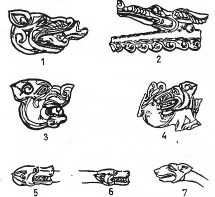
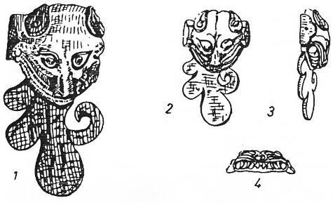
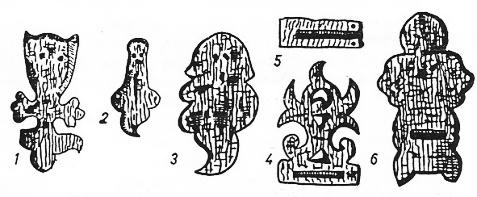
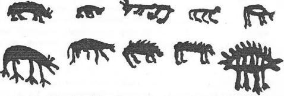

Kurt, Türk mitolojisinin en önemli sembolüdür. Bu sebeple kitabımızda kurda ayrı bir önem vermeye çalıştık. Doğudaki Proto-Moğolların inançlarında daha ziyade önemli yer tutan hayvan köpek idi. Bu sebeple eski Moğolların köpekle ilgili inançlarına da ayrı bir bölüm ayırarak inceledik (Bk. S. 556-8). Köpek kültünü derin bir şekilde incelememizin elbette ki çok önemli bir sebebi vardı. Kurt ile ilgili efsaneler çok sonraki zamanlarda Moğollar arasında da görülüyordu. Hatta Kurt ata ve Ergenekon destanlarının esas itibarı ile eski ve öz Moğol mitolojisinin malı olduğunu ileri süren kimseler de yok değildi. Bunlara cevap vermek ve ilmî delillerle bu nazariyeleri çürütmek pek kolay olmuyordu. Bunun ancak bir yolu vardı. Bu da Çin kaynaklarına göre Moğolların ilk olarak tarih sahnesine çıkmalarından itibaren, onların inançlarında birinci derecede yer tutan hayvanları ve diğer dinî motifleri incelemek ve bilmekle mümkün olacaktı. Moğolların köpekle ilgili inançlarına büyük bir önem vermemizin tek nedeni de bu idi. Asırlarca köpeğe büyük bir önem vermiş ve saygı duymuş, hatta onu kendi atası gibi kabul etmiş bir kavmin, birdenbire kurda da sahip çıkmasına imkân yoktu.
Kurtla ilgili Türk efsanelerini bundan önceki bölümümüzde incelemiştik. Kurt, belki de çok eski çağlarda Türklerin bir Totem'i idi. Fakat Göktürk çağında kurt, bir totemden ziyade kutsal bir sembol haline girmişti. Göktürklerin kendi bayraklarının başına bir kurt heykeli koymalarının sebebi de bu idi. Kurt başlı sancaklar, Göktürk devletinin yıkılışından sonra da unutulmamış ve Çin İmparatorları, mesela Türgeş'Ier gibi Türk kavimlerine Kağanlık unvanları verecekleri zaman, kurt başlı bir bayrakla bir davul vermeyi de unutmamışlardı. Bu inanış, Türklerin Anadolu'ya gelişinden sonra bile devam etmiş ve mesela Süryanî tarihçisi Mikâil'in Selçuk Türklerinin köpeğe benzer bir hayvanın peşinde olarak Anadolu'ya geldikleri ile ilgili hikâyesi, bu eski Türk inancını yansıtmıştı. Türk kağanlığını tanıyan bir Çin imparatoru gibi, Selçuk hükümdarının Osman Gazi'ye tuğ ile davul vermesi de, eski Orta Asya an'anelerinin bir devamından başka bir şey değildi.
Orta Asya Türklerinin yıldızlarla ilgili inançlarında, göklerde kurtların atları nasıl kovaladıkları malûmdur. Yakut Türklerinin efsanelerinde de bunun birçok örnekleri vardır. Kurt, Yakut Şamanlarının en önemli afsun hayvanlarından biri idi42. Öyle anlaşılıyor ki Kurt eski zamanlarda da, mesela Hun çağında da orta Asya halklarının birinci derecede öneme sahip Töz hayvanlarından idi (Bk. Şekil. 10). Yakut masallarında kutsal ruhların 9 oğullarının hepsi de kurda benzetilirdi.43

Şekil 10: Altay Hun çağı kurganlarında bulunmuş ve yeleli kurt figürleri (Rudenko, 1961, T. XCVII).
Türklerin kutsal kurtlarına "Kök-Böri", Gök Kurt demelerinin sebepleri: Türklerin kendi sembolleri olan kutsal kurda "Kök-Böri" Kurt demelerinin de bir sebebi vardı. Kök, yani gök, göğün rengi olan mavilik idi. Aslında Türkler göğe Kök-Tengri, yani mavi gök derlerdi. Bugünkü Türkçemizde kullandığımız "gök" sözü, göğün renginden başka bir değildir. Gök renk, kutsal göğün olduğu kadar, Tanrının da bir sembolü idi. Bir şeyi gök rengine büründürmek veya gök sözü ile beraber söylemek, o şeyi tanrısal saymak veya aralarında Tanrı ile ilgili bir bağ kurmak isteğinden ileri gelmeli idi. Yine bu kitabımızda incelediğimiz Manas Destanında, tecrübeli, görmüş ve geçirmiş ihtiyarlara Ak-Sakallı denirdi. Fakat Manas'ın oğluna ad vermek için birdenbire ortaya çıkan Hızır için ise Gök Sakallı deyimi kullanmıyordu. Er-Töştük destanında Tanrının bir elçisi olarak kayın ağacının üstünden çocuğa seslenen nur yüzlü ihtiyara da Gök Sakallı denmişti. Uygur harfleri ile yazılmış Oğuz-Nâme'de, Oğuz-Han'a yol gösteren kurttan hep "Gök tüylü, gök yeleli" kurt diye söz açılmıştır. Bundan da anlaşılıyor ki eski Türkler, kurdun maddî varlığından ziyade yelesine ve tüylerine önem veriyorlardı. Kırgız destanlarında da Kök Cal, yani "Gök yeleli kurt", en büyük Kırgız bahadırlarına verilen bir unvan idi44. Kırgızlar kurda kaskır derlerdi. Bahadırlar için bunun yerine, bazen de Kök cal kaskır deyimini kullanırlardı45. Gök rengi bazen kırlaşmış saçlar için de söylenmemiş değildi. Kurt sürülerinin başında giden ve onlara yol gösterenler, genel olarak ihtiyar kurtlardı. Bu kurtlar şaşılacak derecede kurnaz, nereden ve ne zaman hücum edecekleri bilinmeyen hayvanlardı. Kurt sürüleri bu ihtiyar kurtların irade ve isteğine uymuş birer kukla gibi idiler. Bu sebeple böyle tecrübeli, fakat korkunç kurtlara "Gök yeleli kurt" da denmişti46. Koyun ve keçi sürülerinin önlerinde giden ihtiyar, tecrübeli teke ve koçlar da böyle idi. Bunlar da adeta sürüleri idare ederlerdi. Bu sebeple Kırgızlar böyle tekelere de Kök Serke, yani "Gök teke" derlerdi47. Geyik sürülerini idare eden ihtiyar tekelere de aynı adın verilmesi gayet tabii idi. Sahibine sadık ve onu birçok felâketlerden kurtaran köpekler de vardır. Orta Asya masallarında böyle tecrübeli köpeklere ise "Gök kuyruklu köpek" denirdi. Kurdun yelesi yerine, bunların kuyruğu gökleştirilirdi.48
Moğollar kurda Çina veya Çinu derlerdi49. Çingiz-Han'ın ilk ataları, erkek kurtla dişi maraldı. Moğolların Gizli Tarihinde bu ata kurda Börte-Çinu adı verilmişti. Börte veya Berte Moğolcada bir renk adıdır. Kök bakımından bizim boz renkle de bir ilgisi vardır. Bilindiği üzere Moğol edebiyatının en eski eseri sayılan "Moğolların Gizli Tarihi", Moğolcadır. Fakat Çin karakterleri ile yazılmıştır. Her sözün karşısına da, yine Çin işaretleri ile Moğolca deyimlerin Çince manaları verilmiştir. Bu Çince açıklamalara göre Moğolca börte'nin manası, "Gök rengi" anlamına geliyordu50. Bazı Türk halkları soylarını kurttan, bazıları da geyikten getirmişlerdi. Çingiz-Han'la ilgili mitoloji bu her iki motifi de birleştirmiş ve Çingiz soyunun babasını kurttan, annesini de geyikten getirmiştir.
Han-nâme'ye göre Çingiz-Han'ın atalarından Alan-Kowa (Alan- ko'a) çadırında yatarken, pencereden birden parlak bir ay girmiş ve Alan-Kowa'yi gebe bırakmıştı. Ay çadırdan girerken de, kadının gözlerine Kurt ve Arslan gibi bir şeyler görünmüştü. Yine aynı kaynağın söylediği başka bir rivayete göre ise, "pencereden ay ışığına benzer bir ışık girmiş ve yine bu ışık Arslan ve kurt şeklinde çıkıp gitmiş imiş".51 Han-nâme'nin bu ikinci söylentisi, Moğolların Gizli Tarihi'ndeki kayda daha uygundur. Moğolların Gizli Tarihi'nde ise, yine Alan-Ko'a geceleyin çadırda yatarken, çadırın bacasından giren ay ışığı içinden, etrafa ışık saçan parlak ve sarışın bir adam girmiş, kadının karnını okşadıktan sonra, bir köpek şekline bürünerek, ay ışığı huzmesine tırmanarak gitmişti.52 Birinci kaynak, daha ziyade Özbek ve Türk bölgesinde yazılmıştır. Bu bölgede, birinci derecede önemli olan hayvanlar Arslan ve Kurt idi. İkincisi ise bir Proto-Moğol kaynağı ve efsanesidir. Bu sebeple Moğolların Köpek ve "Köpek-Ata" ları önemli sayılmıştır.
Altay kavimlerindeki "Kurt-Ata" hakkında bazı notlar: Çingiz Han'ın atasının bir kurt olduğu XIX. asırda bile unutulmamıştı. Orta Asya ve Sibirya'da dolaşan etnograflar bu an'anenin halâ bura halklarının zihinlerinde yaşadığını tespit etmişlerdi53. Uygurların ataları sayılan Kao-ch'e'ların kurt ile ilgili menşe efsaneleri üzerinde durmuştuk.

Şekil 11: Altay-Hun çağı figürleri (Rudenko’dan)
Bu kabileler grubuna bağlı Uygurların, sonradan bu efsaneleri unutmalarına rağmen, Göktürkler bunları kendi bünyelerinde yeniden devam ettirmişlerdi. Altay dağlarında Kurt Dağı adını taşıyan birçok zirveler vardı. Meselâ Ch'e-pi Kağan, Kurt Dağı eyaletinin valisi olmuştu54. Attila'nın yüzünü de kurda benzetenler vardır.
Altay dağlarının doğusunda yaşayan Bersit kabilesi de, kendilerinin kurttan türediklerine inanırlar ve bunun gerçek olduğunu da iddia ederlerdi55.
Büyük Hun Devleti ve Uygurların ataları olan Kao-çı çağında Kurt-Ata, daha ziyade erkek bir kurt idi. Oğuz Destanındaki kutsal "Gök yeleli kurt" da erkekti. Kuzey Doğu Sibirya'daki iptidaî kavimlerin ataları da erkek bir kurt idi. Bazı Kamçatka efsanelerine göre günün birinde bir kadın ikiz çocuk doğuruyor. Sonradan kadının erkek bir kurtla münasebete gelerek bu çocukları doğurduğu anlaşılıyor. Zamanla bu iki çocuktan Kamçatka halkı türüyor ve bu efsane de böylece bütün halk arasında yayılıyor. Bu sebeple Kamçatka halkı, her sene ekim ayında büyük bir bayram yapar ve bu doğum gününü kutlarlarmış. Samandan bir kurt heykeli yapar ve bu heykeli epey dolaştırdıktan sonra da bunu, bir sene müddetle ve ihtimamla saklarlarmış. Ayrıca sembolik olarak bir kız alırlar ve bu saman figür ile evlendirirlermiş. Kamçatka'daki kurt efsanesi ve törenleri hakkındaki bu bilgiler, ta 18. asrın ikinci yarısında toplanmış ve yazılmıştı56.
Öyle anlaşılıyor ki Kurt-Ata ile ilgili türeyiş efsaneleri daha eski çağlarda; Kurt-Ana ile ilgili efsaneler ise daha yeniçağlarda meydana gelmiş mitolojik epizodlar idiler.
Belki de başlangıçtan beri hem Kurt-Ana ve hem de Kurt-Ata motifleri mevcuttu. Fakat görünüşe göre büyük devletler kuran Orta Asya halkları ve bilhassa Türkler, Kurt-Ana üzerinde birleşmişler ve Kurt-Ata da yavaş yavaş önemini kaybetmişti. Buna rağmen Kamçatka'lılar ve Moğollar gibi geri toplumlarda bu Kurt-Ata motifi devam ede gelmişti. Türklerin İslamiyet’e girmesi ve Uygurların büyük bir imparatorluk kurmaları üzerine Arslan motifi de kendini göstermeğe başlamıştı. Mısırdaki Memlûk efsanelerinde olduğu gibi Türklerin ilk ataları Arslanlarla beraber yaşamıştı. Moğollarda Kurtlarla beraber hayat süren bazı bahadırlara da rastlıyoruz. Mesela Çingiz-Han'ın atalarından Bodonçar'ın günün birinde yiyeceği bitmiş ve kurtlar tarafından kovalanarak kayaların arasına sıkıştırılmıştı. Av avladıkça, kurtlar da ona yanaşmış ve yiyeceklerini paylaşarak hep beraber yemişlerdi. Bazen kurtlar o kadar obur olmuşlardı ki, Bodonçar'ın nesi var, nesi yoksa hepsini yiyip bitirmişler ve Bodonçar da onların artıklarını toplamaya mecbur olmuştu. Buna rağmen kurtlar ona dokunup da yememişlerdi. Bodonçar, bu suretle bir senesini kurtların arasında geçirmişti.57
Kurt hiç bir suretle ehlîleşmeyen bir hayvandır. Buna rağmen Anadolu'da :"Kurt komşusunu talamaz" derler. Ayrıca yabancıdan ise, "Komşu kurt beni talasın," atasözümüz de meşhurdur. Eski Türkler de, "Böri koşnısın yimes," derlerdi.58 Bu atasözünü bir şiir haline sokan eski bir Türk şairinin şu beytini de vermeden geçemeyeceğiz:
"Çün incitmez meseldir konşusun kurt,
"Sen incitmek neden olanı hem yurt!"
Güvahî
Kurdun mitolojik komşuluğuna inanan Türkler, diğer yandan da Erzurum mayalarında şöyle yırlamağı unutmamışlardı:
"Aşamirem, bu derenin kurdu var,
"Balam küsmüş ne virane yurdu var!
"Her yiğidin gûna, gûna derdi var,
"Benim derdim, hiç bir derde benzemez.
Totem ve din sembolü olarak kurt: Burada Totem meselesine derin bir şekilde girmeyi uygun bulmuyoruz. Bu problemi kendine bir iş edinen Prof. D. K. Zelenin'in fikir ve sonuçları bile bizi kandırmaktan uzaktır. Hâlbuki adı geçen Rus etnografı, Sibirya ve Orta Asya’daki totemizm hakkında 436 sahifelik bir kitap yazmıştır.59 Sibirya'da Ongon sayılan hayvanların derileri yüzülüp doldurulurdu. Hâlbuki Altay dağlarında Hun çağına ait kurganlarda bulunmuş olan kurt figürlerinde, kurtların derileri soyulmuş; fakat içleri doldurulmamıştır. (Bk. S. 44) Öyle anlaşılıyor ki Kurt, M.Ö. II. asırda bile iptidaî totem mahiyetini çoktan kaybetmişti. Kurt artık, Hun ve Türk halklarının kutsal bir tılsım veya arması haline gelmiştir. Nitekim Moğol halklarındaki Ongon sözü de, Çağatay Türklerinde "Tamga" veya "arma" anlamlarına kullanılmaya başlanmıştı. Şamanist Moğolların Ongon sözünün Çağatay Türklerinde bu manaya kullanılmasını sayın üstadımız Prof. Abdulkadir İnan, İslamiyet’in tesirlerine bağlamaktadır.60 Kanaatimizce bu gibi deyimlerin mana değiştirmelerini cemiyetlerin inkişafı ile de ilgili tutmakta çok fayda vardır. Oğuz boylarını temsil eden av kuşlarından mürekkep ongonlar, Sibirya Şamanizm’indeki iptidaî manalarını çoktan kaybetmiş olmalı idiler. Büyük devletler kuran Oğuzlar çoktan yüksek bir toplum seviyesine erişmiş bulunuyorlardı.
Sibirya ve Altay şamanları kurban edilen hayvanların derilerini çadırlarına asarlardı. Bu iş Şamana kâr ve fayda da sağlıyordu. Çünkü bu deriler Şamanın malı oluyorlardı. Aslında ise kutsal hayvanların derileri, ataların ve kutsal ruhların kişiliklerini temsil ediyorlardı. Mesela Altay Şamanlarına göre Kakım adlı kürk hayvanının derisi, baba ruhlarının kürklerinin bir sembolü idi. Bu sebeple Şamanlar : "Ak as tondu adalarım", yani "Ak kakım donlu, elbiseli atalarım", derlerdi.61 Ağaçkakan kuşu, Altay Türkçesine göre Tomurtka'nın derisi ise, kutsal yardımcı bir Tanrı olan Suyla'nın ruhunun bir sembolü idi. Altaylılara göre ağaçkakan kuşu, Tanrının bir elçisidir. Bu sebeple kurban törenlerinde Şaman ile Tanrı Suyla arasında münasebeti kuran elçi, ağaçkakan kuşudur. Ağaçkakan kuşunun atları da vardır ve kendisi atlıdır. Bu sebeple Şaman dualarında ağaçkakanın adı: "Ala tomurtka adlılar", yani "Ala ağaçkakan atlılar" şeklinde geçer62. Bunun için de Şamanların elbiselerinde her zaman için ağaçkakan kuşunun derilerini görmek mümkündür. Yeri gelmişken Oğuz destanının Ala-Atlı Kişi-donlu Yabgusunu da hatırlatalım.
Yakut Türklerinin Şamanlarına göre, kendi ruhlarını temsil eden birer hayvanları vardı. Ruhlarının dolaştığı bu hayvana ise Îyü-Kul derlerdi. Şaman olgunlaştıkça ruhu da kâmilleşir ve daha iyi hayvanlarda görünmeye başlardı. Yakut Şamanlarına göre en kötü hayvanlar kurt ile köpek idi. En yüksek ruhları taşıyan hayvan ise kartal idi.63 Görülüyor ki Yakutlarda kurt önemini kaybetmiş ve yerini kuşlara bırakmıştı, öyle anlaşılıyor ki yüksek seviyedeki Türk toplumları, sembol olarak daha ziyade avcı kuşlara doğru meyletmişlerdi. İçtimaî seviye yükseldikçe kurt v.s. gibi hayvanlar unutuluyor ve onların yerlerini av avlayan yırtıcı kuşlar alıyordu. Altay ve Yakut kabileleri ile Oğuz boylarının sembollerinin kuş olması, bunu bize açıklayan bir delil olsa gerektir. Altaylardaki Teleüt Türklerinin Merküt adlı kabilesi bir kara kartaldan (Berkut); Yurtas kabilesi ise beyaz başlı bir kartaldan türemişti. Yuttı kabilesinin atası ise bir koyundu.64 Yakutların Kartal Baba'ları üzerinde de, kartal ile ilgili bölümümüzde durmuştuk.65
Baykal gölünün batısındaki Buryat Moğollarında da üç önemli hayvan atadan biri kurttur.66 Buryat Şamanları şöyle derlerdi67:
"Tavşan, bizim "koşucumuz";
"Kurt, bizim "haber getiricimiz";
"Kuğu, "şekline girdiğimiz" (Hubilgan) ;
"Kartal, elçimiz olan hayvanlardır."
Az önce Altay Türklerinin, ağaçkakan kuşuna da Tanrı ile aramızdaki elçimiz dediklerini görmüştük. Her Buryat Şamanının, istediği zaman şekil değiştirerek onun kılığına girdiği bir hayvanı vardı. Onlara göre Şamanların bazıları kartal veyahut da kerkes kuşu olur, havalarda uçarlar ve bazıları da kurbağa olup suyun içinde yüzerlerdi, işte her Şamanın kılığına girebildiği hayvanına Hubilgan derlerdi. Bu deyim Moğolcada, daha ziyade "değişmek" kökü ile ilgili bir sözdür.
Sibirya'daki halklar plan vs. gibi tehlikeli ve korkunç hayvanların figürlerini yapar ve bunları saklarlardı. Bunu yapmakla da, bu gibi hayvanların kendilerine yardım edeceklerine inanırlardı. Yakut Türkleri ise bazen kurt veya tilkiden medet umarlar ve bol bol bu iki hayvanın figürlerini yaparlardı.68
Yukarıda kurt derilerinin önemi üzerinde durmuştuk. Bir Yakut efsanesine göre vaktiyle dünya çok soğukmuş. Ülker, Yakut Türkçesine göre Ürgel yıldızının gökte açtığı delikten soğuk rüzgârlar girer ve yeryüzündeki her şeyi dondururmuş. Bir gün büyük bir bahadır çıkmış ve elleri donmasın diye 30 çift kurt derisinden eldiven yapmış ve göğe çıkarak Ülker yıldızının deliğini kapamış. Bunun için de yeryüzündeki havalar daha sıcak ve daha ılık olmağa başlamış.69 Bu efsane, daha ziyade kurt derisinin sağlamlığını göstermektedir. Buna rağmen efsanenin en önemli motiflerinden biri de kurttur. Bu bakımdan, üzerinde durulması da gerekir.

Şekil 12: Altay Hunlarının ağaç kurt figürleri (Rudenko'dan)
Kurt şekline girme, (methamorphose) hallerine Altay ve Güney Sibirya Türk destanlarında da sık sık rastlamak mümkündür. Mesela Minusinsk'de toplanmış Türkçe bir destana göre, bir mağaradan yer altına giren bir çocuk, önce arslan ve ayılarla karşılaşıyor ve sonra da 13 kıza rastlıyor. Kızlar birdenbire 13 kurt oluyorlar ve çocuğa hücum etmeye başlıyorlar.70
Türk edebiyatında kurt ve kurda benzeme: Kök-Börü, yani "Gök-kurt", büyük hükümdarların kudretini göstermek için kullanılan bir sıfat idi. Mesela Manas destanında, Kızgınların Orta-Yüz reisi Kökçe’nün oğlu ile Manas-Han’ın oğullarına, konuşma sırasında hep "Kök-Börü Sultanım!", denirdi.71 Belki de bu, büyük sultanlar için artık bir unvan olmuş ve kalmıştı.
Büyük hükümdarların doğumu daima fevkalâde olurdu. Hükümdar anneleri fevkalade rüyalar görür ve bunları herkese söyleyerek tefsir ettirirlerdi. Tıpkı Macar kralı Almoş ve Çingiz-Han'ın annesi gibi. Manas- Han'ın karısı Kanıkey-Hatun da bir gece yatarken çok güzel bir rüya görmüştü. Rüyada hemen yakınında bulunan çelik bir eğe görmüş ve eğeyi alarak koynuna saklamıştı. Sabah olup da bu rüyayı yurdun tecrübe görmüşlerine anlatınca herkes sevinmiş ve Kanıkey-Hatun'a şöyle demişlerdi : "Kök yal töböt börü." yani "(Bu çocuk), gök yeleli korkunç bir kurt" gibi olacak.72 Kırgızlarda cins, güzel ve cesur atlara da Kök-Börü, yani "Gök kurt" adları verilirdi.73 Kök Çebiç adını taşıyan atlar da vardı74. Çebiç Anadolu'da genç keçilere verilen bir addır. Orta Asya’da ise iki yaşındaki keçilere çebiç denirdi75. Az yukarıda ihtiyar koçlara da Kök-Serke dendiğini söylemiştik. Bilindiği üzere hükümdar ve büyük bahadırların atları da sahipleri gibi şöhret kazanmış ve halk arasında saygı bulmuşlardı. Bu sebeple bu atlara, yarı kutsal böyle güzel adlar verilirdi. Buradaki Çebiç ve Teke gibi adlar, koyun ve keçi gibi ehli hayvanlardan ziyade, dağ keçileri ve koyunları ile ilgili deyimler olmalı idiler. Kırgız edebiyatında Manas-Han tarif edilirken de şöyle deniyordu:
"Börü köstü, hu murut" : "Kurt gözlü, kır bıyıklı."76 Manas'ın okları için de şöyle denirdi: "Dörü tildü çal yiba", yani "Kurt dilli kır ok."77
Eski Türk atasözlerinden Kurt ile koyun'un yan yana gelmesiyle sık sık söylenen bir sözdür. Anadolu'da da : "Kurtla koyun olmaz çiğerle (yani akraba ile) oyun olmaz!" Derler. Azerî Türkleri ise bu atasözünü biraz daha çevirerek : "Kurt ile koyun, kılıç ile oyun olmaz", demişlerdir. Anadolu'da cesur kimselere, "Kurda varan" ve korkak kimselere ise "Çömelip ürüyen", yani kurttan korkan bir köpek gibi oturup havlayan demişlerdi.78 Kurt, Türklerde kudret ve güçlülüğün bir timsali idi. Bu, bütün Türkler için bir atasözü haline gelmişti : "Kurda ne için boynun yoğun demişler, işimi elimle tutarım da onun için, demiş".79 Yakut Türklerinin efsanelerinde kurt ile Tilki’nin daima yan yana geçtiğini de burada söylemeyi faydalı buluyoruz.
Astronomik bir sembol olarak kurt: Küçük Ayı burcu bir arabayı çeken iki at ve Büyük Ayı burcu ise 7 kurt idi. Eski Türk mitolojisine göre bu yedi kurt, durmadan Küçük Ayı burcunun iki kısrağını kovalarlardı. Fakat atları bir türlü tutamazlardı. Zaten tutmuş olsalardı, göğün ve yerin düzeni bozulacak ve kıyamet kopacaktı. Bu sebeple Türk efsane ve masallarında burçlardan hiç söz açılmayarak, göğe çıkan kısraklardan ve onu kovalayan kurtlardan bahsedilir. Böyle cümleler geçince, hemen onu kıymetlendirmek ve bu sembollerin ne mana ifade ettiklerini anlamak lazımdır. Böyle sembollere Mitoloji tetkiklerinde allegorie denirdi. Yani, herhangi bir şeyi başka bir sembolle ifade etmek sanatı. Mesela Güney Sibirya'daki Minusinsk'de toplanmış Türkçe masallarda şuna benzer bir cümle geçiyor: "Oğlanın bindiği kısrak göğe uçuyor ve Han da, 7 kurduna onu kovalamak için buyruk da bulunuyor."80 Böyle bir cümle okuyunca, hemen durup, bu sözleri astronomik bakımdan değerlendirmek lazımdır. Başka bir yerde de: "Kısrağı tutmak için 12 kurda" emrediliyor.81 Bu da astronomik bir mana ifade eden bir cümledir.
Yakut Türklerinin efsanelerine göre, "Ay tutulması" olayı şöyle anlatılıyor: Ay dolun olup da gökte bir tepsi gibi parlayınca kurtlar ile ayılar aya hücum edip, ayı yiyorlarmış. Bu yüzden de ay tutuluyormuş. Bazı efsanelere göre de, ay dolun oldukça kurtlar aya hücum ederek onu yiyorlarmış. Fakat buna rağmen Tanrı, ayı yine diriltip olgunlaştırıyormuş.82 Yakutlar ayrıca dört yıldızlı bir burca da Börö-Tumsa şeklinde, kurtla ilgili bir ad verirlerdi.83 Tabii olarak Türk mitolojisinde kurtla ilgili daha pek çok bilgi vardır. Fakat kitabımızın bu cildi için böyle bir girişi kâfi görüyoruz. Kurt, yalnızca Türklerde görülen kutsal bir hayvan değildir. Atilla ile ilgili Avrupa efsanelerinde de görülür. Meselâ Atilla'ya karşı keramet gösterip şehrini kurtaran Troyes'li ermiş papaz Saint Lupus da, bir bakıma bir kurt idi. Fakat bu, Avrupa mitolojisinin kurdudur (Atilla ve Hunlar, s. 161). İzlanda gibi kuzey memleketlerinde de kurt, insanlarda bir yandan korku ve diğer yandan da sevgi hisleri doğuran bir hayvandır. Biliyoruz ki Atilla, İzlanda efsanelerinde de geçerdi. İzlandalılara göre, Atilla'nın Gurdun adlı İzlandalı bir eşi vardı. Bu efsaneyi özetleyerek ve kısa olarak aşağıda veriyoruz. Gurdun, kendi kaynı Gunnar'ı davet ederken, ona bir itimat telkin etmek için parmağındaki "Kurt kılları ile örtülü, bir yüzüğünü" gönderir. Tabiî olarak kurt kılları ile örtülü bu yüzüğün Orta Asya’daki kutsal kurtla bir ilgisi olup olmadığını kestirmek güçtür. Fakat Gurdun, Atilla'dan intikam almak için, çocuklarının kafatası ile ona şarap da içiriyor. Bu da bir Orta Asya âdetidir. Atilla bu efsanede tam manası ile mitolojik bir şahsiyettir. Kendisi Hunların değil; kötü ruhların, şeytanların kralıdır (Atilla ve Hunlar, s. 178). Bu çok enteresan efsaneden bir parçayı, burada özetlemeyi faydalı görüyoruz:

Şekil 13: Abakan-Kırgız Şamanlarının alet ve elbiselerinin üzerine çizilmiş kurt resimleri. Çoğu, tanrılaştırılmışlardır (İvanof, Aynı esr., 8. 605).
Edda adlı ve eski İzlanda dilinde yazılmış olan bir destanda şöyle deniyor:
Atli, (yani Attila'nın) Gurdun adlı bir karısı ve Gunnar adlı da bir kaynı vardır. Kaynı Gunnar'ı ortadan kaldırıp onun malına konmak için kurnaz bir hizmetkârını ona gönderir ve kaynını evine davet eder. Atli'nin karısı Gurdun, meselenin iç yüzünü anlar. Parmağındaki kurt kılları ile örtülü olan yüzüğünü çıkarır ve kardeşine gönderir. Bu suretle, ona dikkatli ol ve gelme, demek ister. Gunnar'ın etrafındakiler de, onun bu daveti kabul etmemesi için çok uğraşırlar. Fakat bunların hiç biri fayda vermez ve Gunnar yola çıkıp, Atli'nin ordugâhına gelir. Atli kaynını karşılar ve askerlerle dolu kale burçlarında onu ağırlar. Az sonra da kaynına kendisinin artık bir esir olduğunu ve bir daha da geri dönemeyeceğini söyler. Gurdun, para verip kurtulmak ister. Fakat Atli'nin daha büyük gayeleri vardır. Bunun için de böyle bir fidyeye razı olmaz. Alman destanının meşhur kahramanı Nibelungen'in hazineleri varmış. Bu hazinelerin yerini de, yalnızca Hagen adlı biri bilirmiş. Fakat Hagen da çoktan ölmüş imiş. Bununla beraber onun ruhu, her zaman Gunnar'ın etrafında dolaşır ve ona nasihatler edermiş. Atli bunu bildiği için, Gunnar'ı sıkıştırmaya başlamış. Fakat Gunnar, Hagen'ın ruhunu bu işe karıştırmaktansa, yılanlarla dolu zindanlara atılmasına razı olmuş ve böylece hayatı sona ermiş. Atli'nin karısı Gurdun, buna çok içerlemiş ve Attila'dan intikamını almak için fırsat kollamış. Attila'nın da, Erpe ve Eitel adlı iki tane oğlu varmış. Attila savaşta iken, Gurdun bunları öldürmüş ve babaları savaştan dönünce de, ona çocuklarının kafatası ile şarap içirmiş. Daha sonra da bir yolunu bulup, Attila'nın hizmetçisini elde etmiş ve Attila'yı bıçaklatarak öldürtmüş. Sarayını da ateşe vermiş..."
Atilla'yı daha yakından tanıyan eski Alman destanlarına göre ise, Atilla çok iyi ruhlu, cömert, sakin ve büyük bir şövalye ruhuna sahip bir hükümdardı. Atilla'yı görmeyen; fakat yalnızca onun şöhretini ve etrafa saldığı büyük korkuyu duyan İzlanda şairleri, onu bir cin veya peri gibi sanmışlardı. Bunun için de onlara göre Huna-land, yani Hunların ülkesi, cin ve perilerin yaşadığı bir ülke idi.
Göktürk efsanelerindeki, "Yükseğe sıçrama yolu ile Hakan olma" meselesi: Aşağıda örnek olarak vereceğimiz masal, aslında güzel bir hikâye değildir. Fakat bu masal Türk mitolojisi bakımından, fevkalâde büyük bir değer taşır. Yukarıda tercümelerini yaptığımız Göktürk efsanelerinde hakanlığa hak iddia eden kardeşler, bir ağaca doğru sıçrama yarışı yapmışlar ve kim en yükseğe atlayabilmişse o Hakan olabilmişti (Bk. S. 28). Aynı Masal motifini Altay masallarında da buluyoruz. Oğuz-Han da iki altın direk diktirmiş ve oğullarına bunlar üzerindeki altın ve gümüş kuşlara nişan aldırmıştı. Oğuz destanlarının bu kısımları karanlıktır. Oğuz-Han bu töreni niçin yapmıştı? Bunun sebebi pek anlatılmıyor. Bu masalda da iki altın direk vardır ve bu direklerin üzerine de iki mum dikilmişti. Masal kahramanlarının kuşlar ile konuşmalarını da ayrı bölümlerde incelemiştik (Bk. S. 86). Çocukları tuluma veya sandığa koyup büyük ırmaklara atma da Türk mitolojisinin tanınmış bir motifidir (Bk. S. 413-5). Ataların deniz geçme yolu ile gelmelerini de incelemiştik (Bk. S. 575-8). Bu masalda da ırmağa, deniz adı verilmiştir. Bu masal, Altay Türklerinden olan Teleüt'lerin arasından, W. Radlof tarafından toplanmıştır (Proben, I, s. 186-188: Metin).
"Yaşlı bir adamın çocuğu oluyor ve çocuk yavaş yavaş büyümeye başlıyor. Adam istiyor ki, oğlu okuyup yazsın ve okumayı yazmayı öğrensin. Çocuğu bir hocanın yanına veriyor. Çocuk hocanın yanında çalışarak okuyup, yazmayı öğreniyor.
"Günün birinde babası ile oğlu bir yerden dönüyorlarmış. Ağacın üzerinde birden bir kuş peyda oluyor ve başlıyor oğlanla konuşmaya. Oğlan kuşun sözlerini duyunca seviniyor ve gülmeye başlıyor. Oğlanla kuş arasında konuşma devam ediyor. Oğlan bu defa kızıyor. Bağırarak kuşun yüzüne tükürüyor. Sonra da kuşu bırakıp yürümeye başlıyor. Bütün bu konuşmaları seyreden babası merak ediyor ve oğlana, kuşla ne konuştuklarını soruyor. Fakat oğlan, bu konuda ağzından hiç bir şey çıkarmıyor. Babası ısrar ediyor. Oğlanı zorluyor. En sonunda oğlan, babasının isteğine dayanamayarak kuşun neler dediğini anlatıyor:
" - Kuş önce bana dedi ki padişah olacaksın. Altın saraylarda oturup yaşayacaksın. Herkese ziyafet verip, doyuracaksın. Ama bir gün gelecek ki, babana da idrarını içireceksin! "Oğlanın babası bu sözleri duyunca kızıp, küplere biniyor ve bağırmaya başlıyor. Oğlanı attan indiriyor. Hemen orada atını kesiyor. Atın derisinden bir tulum yapıyor. Oğlanı bu tulumun içine koyup, ağzını iyice bağladıktan sonra, tulumu büyük bir ırmağın içine atıyor. (Masalın bundan sonraki kısmını, metinden aynen tercüme etmeye çalışacağız) : Irmağın akıntısı oğlanı bir köyün yanındaki kıyıya atıyor. Aynı köyde yaşayan, yalnız bir ihtiyar kadın kıyıda gezerken, suyun içinde tuluma benzer bir şey görüyor. Hemen suya girerek tulumu dışarı çıkarıp açıyor ve içinde bir oğlan çocuğu görüyor. Oğlanı tulumdan çıkarıyor, alıp evine götürüyor. Besliyor, büyütüyor ve aradan epey zaman geçiyor.
"0 ülkenin bir Hakanı varmış. Hakanın da hiç çocuğu yokmuş. Hakan ölünce tahtı boş kalmış. Halk toplanmış. Altından iki direk yaptırmış ve direkleri getirerek köyün ortasındaki meydana dikmiş. Her direğin başına da yanar birer mum koymuşlar. Demişler ki, herkes bu iki direğin arasından atlayarak mumları düşürmeye çalışacaktır. Kim en yükseğe atlar da bu mumları düşürürse, o bizim hakanımız olacaktır. Direkler arasından çok kimseler atlamış ama hiç kimse direklerin üzerinde yanan mumları alarak düşürememiş. Sıra oğlana gelmiş. Oğlan ilk atlayışta mumları düşürmüş. Fakat üstüne düşen mumlarla da ensesi pişmiş. Böylece Hakan olan oğlan, gidip tahtına oturmuş. Bunun üzerine ziyafetler verilmiş ve bütün halk, kurulan sofralarda yemek yemeye başlamış. Bunların içinde oğlanın babası da varmış. Çok içerek kör kütük sarhoş olmuş ve yine rakı aramaya başlamış. Rakı ararken de, oğlunun idrarını tesadüfen bir kapta bulmuş ve onu tutarak içmiş. Oğlanın babası da bu yolla sarhoşluğunun cezasını bulmuş."
Ateşin icadı ve Göktürkler: Göktürk efsanesinde, ateşi ilk defa bularak Türklere öğreten efsanevî bir atadan söz açılır. Göktürklerin bu atası, yarı insan ve yarı da Tanrı şeklinde idi. Soğuktan büyük bir ıstırap çeken Türkler, onun ateşi bulması sayesinde hem ısınabilmişler ve hem de yemeklerini pişirebilmişlerdi. Bu efsaneye göre daha önceleri Türkler yemeklerini çiğ olarak yiyorlardı. Bu duruma göre Türklerin ataları başlıca iki grup altında tanımlanıyorlardı.
1. Yemeğini çiğ yiyen Türkler.
2. Ateşin büyük bir ata tarafından bulunmasından sonra, yemeklerini pişirerek yiyen Türkler. Kuzey-Batı Sibirya'da yaşayan ve Macarların akrabaları sayılan Vogul'lar da, kendi mitolojilerindeki Yarı-Tanrı kahramanlarını böyle sınıflandırıyorlardı. Vogul mitolojisinin eski kahramanları da, yemeklerini çiğ yiyen ve pişiren atalar şeklinde iki kısma ayrılıyorlardı.
Göktürk efsaneleri ateşi bulan atalarına büyük bir önem veriyor ve onu kutsallaştırıyorlardı. Vogul mitolojisindeki durum ise, bunun tamamı ile aksi idi. Onlara göre gerçek Vogul ataları, yemeklerini çiğ yiyen ilk insanlardı. Ateşi bulup ve yemeklerini pişirenler ise, artık bozulmuş ve gerçek Vogul sayılmayan kimselerdi.
Öyle anlaşılıyor ki Türkler ateş kültürünü çok erken çağlarda tanımışlardı. Sibirya'daki komşuları ise bu noktada Türklerden geri kalmışlar ve bu gerilik, Orta Asya Türkleri ile kendilerini ayıran belli başlı bir ayrılık gibi ortaya çıkmıştı. Ateşi bilen ve ateşi insanlık için faydalı bir yöne sevk eden Ortaasya'nın medenî Türk kavimleri bu bölgelere sızdıkça, kendi kültürlerini de beraber götürmüşlerdi, öyle anlaşılıyor ki bu Fin-Ugor kavimleri, yemeklerini ateşle pişiren diğer komşularını kendilerinden saymıyorlardı. Türklüğün Kuzey-Batı sınırındaki Vogul kavimlerinin bu konu ile ilgili efsaneleri şöyledir84:
"Eski çağlarda bir gün, kahramanlar ava gidiyorlar ve pek çok ay avlayarak geri dönüyorlar. Bu etlerle büyük bir toy yapalım diye hazırlığa başlıyorlar. Tam bu sırada düşmanlar gelerek ani bir baskın yapıyorlar ve hepsini dağıtıyorlar. Etrafa kaçışan avcılar, bir süre sonra çıkıyorlar ve ellerindeki yiyecekleri çiğ çiğ yiyorlar. Yiyeceklerini çiğ olarak yiyen bu halklara Moş-Hum, yani "Moş-Kavmi" deniyor. Bu çok kutsal bir kavim oluyor. Bunun için de onlara Tarem-Sir-Hum, yani "Tanrısal kavim" deniyor. Bu halklar, yiyeceklerini çiğ yedikleri için, düşmanın elinden kurtulabilmiş ve kaçabilmişlermiş.
"Diğerleri ise, avda elde ettikleri etleri pişirmekle meşgul imişler. Yemeklerini pişirinceye kadar, düşman yetişmiş ve onları tamamı ile mağlûp etmiş. Bu suretle düşmanın eline tutsak düşen bu kavimler, sonuna kadar hep köle olarak yaşamışlar..."
Bu efsaneden de anlaşılıyor ki, kuzey-batıda çok iptidaî bir hayat yaşayan bu kavimler, yemeklerini ateşle pişiren Orta Asya kavimlerini kendilerinden saymıyorlardı. Onlara göre gökte yaşayan kutsal insanlar yemeklerini pişirmezlerdi. Yemeklerini pişiren insanlar, ancak yeryüzünde yaşayan milletlerdi. Bunlar da güçlerini Tanrının verdiği kurtla değil, adi sihirbazlık ve şamanlıkla gösterirlerdi.
Ateşin bulunuşu ile ilgili bir Altay efsanesi ise şöyledir85: "Tanrı insanı yaratınca şöyle düşünmüş: " - Ben bu insanları yarattım ama çıplak yarattım. Hava da bu günlerde çok soğuk. İnsanoğlu kendini soğuğa karşı nasıl koruyacak ve nasıl yaşayacak? En iyisi bunlar için bir de ateş vermeli de, ısınıp yaşasınlar!" Tanrı Ülgen'in üç tane kızı varmış. Bunlar da, ateşi bulmak için çalışıyorlarmış. Bir gün Tanrı dışarı çıkmış. Tanrının sakalı da çok uzunmuş. Yürürken sakalına basıp sendeleyivermiş. Kızlar bunu görünce gülmeye ve Tanrı ile alay etmeğe başlamışlar. Bunun üzerine Tanrı çok kızmış ve kızların yüzüne bile bakmayarak, bırakıp gitmiş. Tanrının kızdığını gören kızlar üzülmüşler. Ama Tanrı ne yapıyor ve bizim için neler söylüyor diye, kapının deliğinden dinlemeyi de ihmal etmemişler. Bu sırada Tanrı kızmış, kendi kendine söyleniyormuş:
" - Tanrı Ülgen'in üç kızı benimle alay ettiler ama ben onlardan çok daha akıllıyım. Onlarda akıl mı var! Ateşi bulmak için sert bir taşla, sert bir demir bulmalılar ki, birbirine vursunlar da ateş çıkarsınlar. Bunları bulmak için de onlarda bu akıl yok!" Kızlar bunu duyunca koşmuşlar. Sert bir taşla demir bulmuşlar ve birbirine vurarak ateşi icat etmişler."
Bu efsaneye göre ateşi bulan insan değil; yine Tanrının gökteki kızları idi. Yakut Türkleri de ateşin gökten indiğine inanırlardı.86 Bütün Orta Asya ve Sibirya mitolojileri, ateşin gökten geldiği hususunda birleşirler. Tanrıdan ateş bulma iznini aldığına göre, Göktürklerin atalarının da kutsal bir varlık olması gerekiyordu. Bizim buradaki vazifemiz, Türklerde ateşin önemini belirtmek değil; sadece Göktürk efsanesinde geçen bu olayı açıklamaktır. Yoksa Türklerin ateş ile ilgili inançları çok iyi bir şekilde incelenmiştir.87